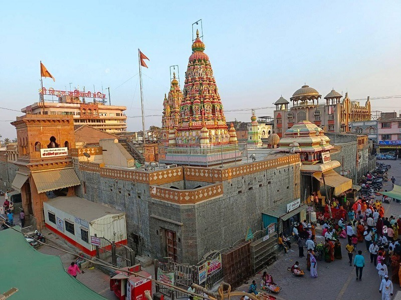
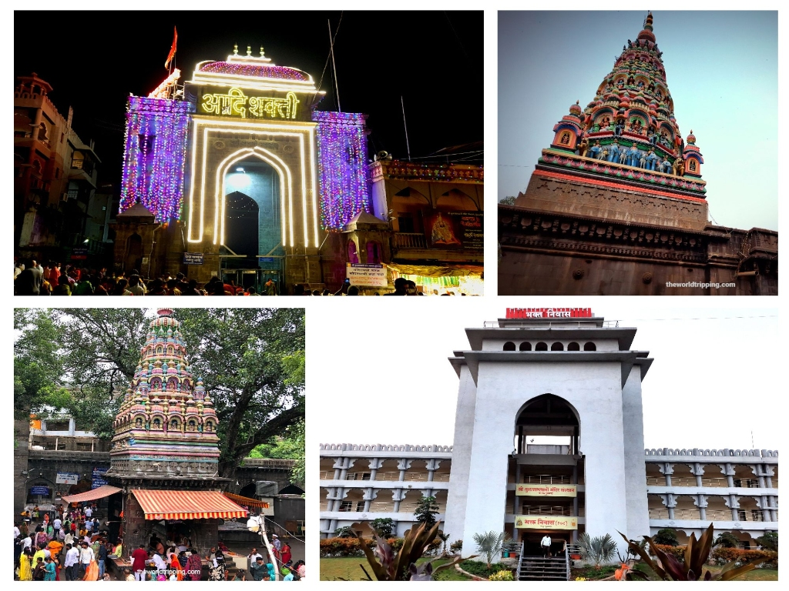
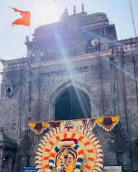

Festivals of Solapur
Siddheshwar Yatra
One of the largest festivals celebrated in honor of Shri Siddheshwar with religious ceremonies and processions.


Ashadhi Wari
Devotees walk long distances to Pandharpur while singing devotional songs. Millions of devotees participate in this pilgrimage every year.



Tuljapur Temple Culture
Tuljapur is famous for the Tulja Bhavani Temple. Thousands of devotees visit the temple throughout the year, especially during the Navratri festival.


Local Traditions
The culture of Solapur reflects a mix of Marathi and Kannada traditions with religious festivals, music, devotional songs, and temple rituals.
Textile Heritage
- Solapur Chaddars
- Cotton Towels
- Handloom Fabrics